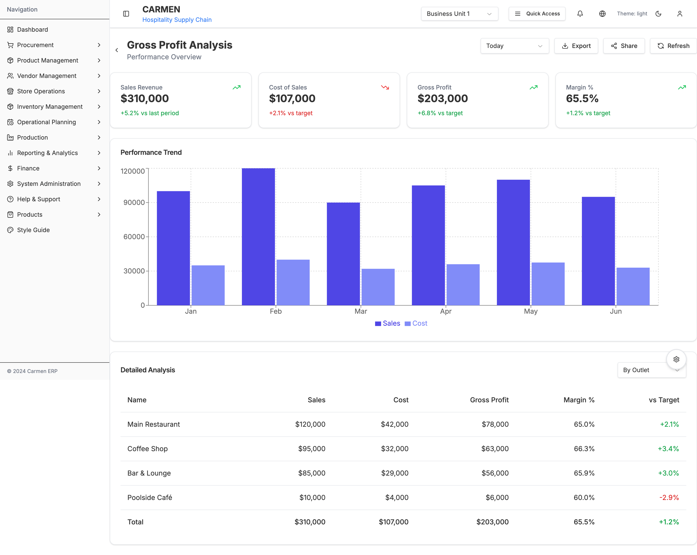
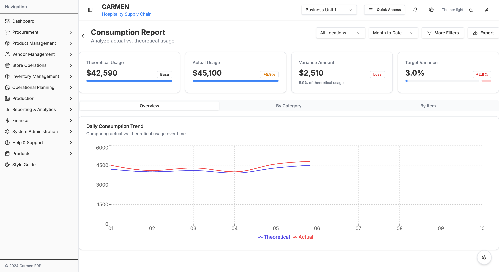

POS Reports
Submodule: Reports
Route: /system-administration/system-integrations/pos/reports
Status: ✅ Production
Parent Module: POS Integration
Overview
The Reports module provides comprehensive sales performance and consumption analysis through two primary reports: Gross Profit Analysis and Consumption Report. These reports enable data-driven decision-making for pricing, cost control, and inventory management.
Screenshots

Gross Profit Analysis - Sales vs cost analysis with trend visualization and multi-dimensional views

Consumption Report - Actual vs theoretical usage analysis with variance tracking
Report Types
1. Gross Profit Analysis
Route: /system-administration/system-integrations/pos/reports/gross-profit
Purpose: Analyze sales revenue against cost of sales to calculate gross profit and margin percentages across outlets, categories, and individual items.
Key Metrics Dashboard:
Sales Revenue
- Total sales for selected period
- Trend indicator (% vs last period)
- Green/Red arrow indicating direction
- Example: $310,000 (+5.2% vs last period)
Cost of Sales
- Total cost of ingredients/recipes sold
- Comparison vs target cost
- Based on recipe costs × quantities sold
- Example: $107,000 (+2.1% vs target)
Gross Profit
- Sales Revenue minus Cost of Sales
- Comparison vs target profit
- Absolute dollar amount
- Example: $203,000 (+6.8% vs target)
Margin %
- (Gross Profit / Sales Revenue) × 100
- Comparison vs target margin
- Industry benchmark: 60-70% for food service
- Example: 65.5% (+1.2% vs target)
Performance Trend Chart:
- Type: Combination chart (Bar + Line)
- X-Axis: Time periods (6 months default)
- Y-Axis Left: Dollar amounts (Sales, Cost)
- Y-Axis Right: Percentage (Margin %)
- Bars: Sales (dark blue), Cost (light blue)
- Line: Margin % (green)
- Interaction: Hover shows exact values
Detailed Analysis Table:
Three View Types:
- By Outlet: Performance per location
- By Category: Performance per menu category
- By Item: Individual recipe profitability
Columns:
- Name (Outlet/Category/Item)
- Sales (revenue)
- Cost (cost of sales)
- Gross Profit (calculated)
- Margin % (calculated)
- vs Target (comparison, green = above target, red = below)
Example By Outlet:
| Outlet | Sales | Cost | Gross Profit | Margin % | vs Target |
|---|---|---|---|---|---|
| Main Restaurant | $120,000 | $42,000 | $78,000 | 65.0% | +2.1% |
| Coffee Shop | $95,000 | $32,000 | $63,000 | 66.3% | +3.4% |
| Bar & Lounge | $85,000 | $29,000 | $56,000 | 65.9% | +3.0% |
| Poolside Café | $10,000 | $4,000 | $6,000 | 60.0% | -2.9% |
| Total | $310,000 | $107,000 | $203,000 | 65.5% | +1.2% |
Filters & Controls:
- Date Range Selector: Today, Yesterday, MTD, YTD, Custom
- View Type Selector: By Outlet, By Category, By Item
- Export Button: PDF, Excel, CSV options
- Share Button: Email report or generate shareable link
- Refresh Button: Reload data
Business Insights:
- Identify high-margin vs low-margin items
- Compare outlet performance
- Track margin trends over time
- Spot underperforming categories
- Support pricing decisions
- Guide menu engineering
Formulas:
Gross Profit = Sales Revenue - Cost of Sales
Margin % = (Gross Profit / Sales Revenue) × 100
vs Target % = ((Actual - Target) / Target) × 100
2. Consumption Report
Route: /system-administration/system-integrations/pos/reports/consumption
Purpose: Compare actual ingredient usage against theoretical usage based on recipes to identify waste, theft, portion control issues, and recipe inaccuracies.
Key Metrics Dashboard:
Theoretical Usage
- Expected consumption based on:
- Recipe costs × Quantities sold
- Standard portion sizes
- Recipe specifications
- Label: "Base" (this is the benchmark)
- Example: $42,590
- Expected consumption based on:
Actual Usage
- Real inventory deductions from system
- Based on stock movements
- Includes all inventory adjustments
- Percentage vs theoretical
- Example: $45,100 (+5.9%)
Variance Amount
- Absolute difference: Actual - Theoretical
- Label: "Loss" if positive, "Gain" if negative
- Represents unaccounted-for usage
- Example: $2,510 (Loss)
Target Variance
- Acceptable variance threshold (typically 3%)
- Shows if current variance exceeds target
- Progress bar visualization
- Example: 3.0% target, currently at 5.9% (+2.9% over)
Daily Consumption Trend Chart:
- Type: Dual-line chart
- X-Axis: Days (last 10 days default)
- Y-Axis: Dollar amount
- Lines:
- Theoretical (blue line)
- Actual (orange line)
- Interaction: Hover shows daily values
- Pattern Analysis:
- Parallel lines = consistent variance
- Diverging lines = increasing variance
- Converging lines = improving variance
Analysis Tabs:
Tab 1: Overview
- Daily trend visualization
- Summary metrics
- Key findings and alerts
Tab 2: By Category
- Variance breakdown by menu category
- Table with columns:
- Category Name
- Theoretical Usage
- Actual Usage
- Variance Amount
- Variance %
- Status (Good/Warning/Critical)
- Sort by variance to identify problem areas
Tab 3: By Item
- Item-level detail view
- Drill-down capability
- Table with columns:
- Item Name
- Recipe Code
- Qty Sold
- Theoretical Usage
- Actual Usage
- Variance Amount
- Variance %
- Actions (View Recipe, Adjust Recipe)
Filters & Controls:
- Location Filter: All Locations or specific outlet
- Date Range Selector: MTD, Last 7 Days, Last 30 Days, Custom
- More Filters Button: Advanced filtering options
- Export Button: Export variance report
Variance Thresholds:
- Good (Green): ≤3% variance - Within acceptable limits
- Warning (Yellow): 3-5% variance - Monitor closely
- Critical (Red): >5% variance - Requires immediate investigation
Common Variance Causes:
Positive Variance (Actual > Theoretical):
- Waste: Food spoilage, preparation waste
- Theft: Employee or external theft
- Portion Control: Over-portioning by staff
- Recipe Inaccuracy: Recipe quantities not matching reality
- Measurement Errors: Inconsistent measuring practices
- Spillage: Accidents during prep or service
- Free Items: Complimentary items not recorded in POS
Negative Variance (Actual < Theoretical):
- Under-portioning: Portions smaller than specified
- Incomplete Recording: Items not properly deducted from inventory
- Recipe Efficiency: Better yield than recipe specifies
- Inventory Errors: Stock count inaccuracies
Investigation Workflow:
Identify High Variance Items:
- Navigate to "By Item" tab
- Sort by Variance % descending
- Focus on top 10 variances
Analyze Patterns:
- Check if variance consistent or spike
- Review daily trend chart
- Compare across locations
Investigate Root Cause:
- Review recipe accuracy
- Observe preparation process
- Check portion control tools (scales, measuring cups)
- Interview kitchen staff
- Review security footage (if theft suspected)
Take Corrective Action:
- Adjust recipe if inaccurate
- Retrain staff on portioning
- Implement better measuring tools
- Enhance security measures
- Update par levels
Monitor Improvement:
- Track variance over next period
- Verify corrective actions effective
- Adjust as needed
Business Value:
- Cost Control: Reduce waste by 1-3% typically saves $10K-30K annually
- Recipe Validation: Ensure recipes reflect reality
- Theft Detection: Early identification of inventory shrinkage
- Staff Training: Data-driven feedback for portion control
- Procurement Optimization: Accurate forecasting based on real usage
- Profitability: Every 1% variance reduction improves bottom line
Formulas:
Theoretical Usage = Σ(Recipe Cost × Quantity Sold)
Actual Usage = Σ(Inventory Deductions)
Variance Amount = Actual Usage - Theoretical Usage
Variance % = (Variance Amount / Theoretical Usage) × 100
Common Features Across Reports
Date Range Selection
Presets:
- Today
- Yesterday
- This Week
- Last Week
- Month to Date (MTD)
- Last Month
- Year to Date (YTD)
- Custom Range
Custom Range:
- Start date picker
- End date picker
- Maximum range: 1 year
- Apply button
Export Functionality
Formats:
- PDF: Print-friendly format with charts
- Excel: Data tables with formulas preserved
- CSV: Raw data for further analysis
Export Options:
- Include charts (PDF only)
- Summary metrics only
- Detailed data
- Custom date range override
Responsive Design
- Desktop: Full layout with charts
- Tablet: Stacked layout, charts adapt
- Mobile: Scrollable tables, simplified charts
Performance Optimization
- Server-side data aggregation
- Client-side caching (15-minute TTL)
- Lazy loading for large datasets
- Progressive rendering for charts
Report Scheduling (Future Enhancement)
Planned Features:
Scheduled Reports:
- Daily, Weekly, Monthly frequency
- Email delivery to specified recipients
- PDF format with executive summary
Report Subscriptions:
- Users subscribe to reports
- Automatic delivery based on preferences
- Customizable format and detail level
Alerts:
- Threshold-based alerts (e.g., variance >5%)
- Automatic email/SMS notifications
- Configurable alert rules
Best Practices
Gross Profit Analysis
- Review Weekly: Track margin trends consistently
- Compare Periods: Use vs last period comparison
- Drill Down: Start with outlets, then categories, then items
- Target Setting: Set realistic margin targets by category
- Action Items: Address low-margin items or outlets
Consumption Report
- Review Daily: Catch variances early
- Focus on High-Variance: Address biggest issues first
- Pattern Recognition: Look for trends, not one-time spikes
- Staff Involvement: Share data with kitchen staff
- Continuous Improvement: Track month-over-month improvement
General
- Consistent Time Periods: Use same periods for comparison
- Location-Specific Analysis: Different outlets have different dynamics
- Seasonal Adjustment: Account for seasonal variation
- Data Quality: Ensure recipe costs updated regularly
- Documentation: Document investigation findings
Integration Points
Transaction Management
- Sales transaction data source
- Item-level detail for analysis
- Transaction timestamps for trend analysis
Recipe Management
- Recipe costs for theoretical calculations
- Recipe ingredients for usage tracking
- Recipe categories for grouping
Inventory Management
- Actual usage data from stock movements
- Real-time inventory levels
- Par level information
Finance
- Cost of goods sold (COGS) calculation
- P&L report integration
- Budget vs actual comparison
Troubleshooting
Gross Profit Issues
Low Margins Across All Items:
- Check if recipe costs updated recently
- Verify ingredient price increases
- Review pricing strategy
- Analyze competitive positioning
Specific Item Low Margin:
- Verify recipe cost calculation
- Check portioning accuracy
- Consider price increase
- Evaluate ingredient substitutions
Consumption Report Issues
High Variance Everywhere:
- Audit inventory counting process
- Verify recipe accuracy
- Check stock deduction automation
- Review staff training
Negative Variance:
- Investigate under-portioning
- Check inventory count accuracy
- Verify stock deductions configured correctly
Variance Fluctuations:
- Review staffing changes
- Check for new menu items
- Verify seasonal patterns
- Investigate equipment issues
Future Enhancements
- AI-Powered Insights: Machine learning to predict variances and suggest optimizations
- Benchmark Comparisons: Industry benchmarks and peer comparisons
- What-If Analysis: Model price changes and cost reductions
- Integrated Action Plans: Create and track improvement initiatives
- Mobile Dashboard: Mobile-optimized views for on-the-go monitoring
- Real-Time Alerts: Push notifications for critical variances
- Video Tutorial Integration: Contextual help videos
- Custom Reports: User-created custom reports with drag-and-drop
- Historical Comparison: Multi-year trend analysis
- Predictive Analytics: Forecast future costs and revenues
Related Documentation
- POS Integration Module
- Mapping Documentation
- Transactions Documentation
- Recipe Management
- Inventory Management
Last Updated: October 10, 2025
Version: 1.0
Status: Production